I helm the Leadership Teams for sister agencies Team One and Saatchi LA, ensuring this key group of senior managers remains focused on creating value for our clients. And as a member of the Toyota Worldwide Executive Board, I’ve played a central role in all key marketing initiatives for Toyota, including the Gold Effie award-winning launch of the Tundra full-size pickup. Prior to joining the Saatchi team in 2003, I spent 32 years on the client side at General Motors, rising to General Manager of Chevrolet Motor Division. We are passionate about discovering the truth of a brand rather than inventing a truth; and we tell, show and demonstrate its essence in a compelling manner that builds sustainable growth.
Kurt Ritter
Chairman
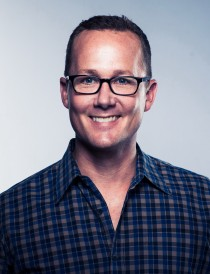
I began my career at a few large agencies in New York, which eventually led me to Los Angeles. Before joining Team One, I was responsible for several widely recognized and successful advertising campaigns for brands such as Nissan, Range Rover, J&B Scotch, Sony PlayStation and Energizer. In 2003, I got my dream job, Chief Creative Officer at Team One. In my time at Team One, I have helped to grow the agency both physically and creatively. Our campaigns have been recognized at Cannes, the One Show, the Webbys, CLIOs, CA, ADDYs and Beldings. But, more importantly, those campaigns helped drive brand preference and, ultimately, sales for our clients. Over the years, I have recruited many highly talented art directors, designers and writers, who continue to make Team One the envy of the industry and, coveted place to work.
Paul Mareski
President
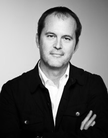

I began my career at a few large agencies in New York, which eventually led me to Los Angeles. Before joining Team One, I was responsible for several widely recognized and successful advertising campaigns for brands such as Nissan, Range Rover, J&B Scotch, Sony PlayStation and Energizer. In 2003, I got my dream job, Chief Creative Officer at Team One. In my time at Team One, I have helped to grow the agency both physically and creatively. Our campaigns have been recognized at Cannes, the One Show, the Webbys, CLIOs, CA, ADDYs and Beldings. But, more importantly, those campaigns helped drive brand preference and, ultimately, sales for our clients. Over the years, I have recruited many highly talented art directors, designers and writers, who continue to make Team One the envy of the industry and, coveted place to work.
Chris Graves
Chief Creative Officer
I have over 13 years of digital advertising experience working for top Agencies in San Francisco, New York and London. This includes acting as lead creative on large websites and advertising campaigns for companies like Marriott, Lexus, Microsoft, Nortel, Cisco, American Express, GlaxoSmithKline, Kodak and Nestlé. My work has included pioneering efforts in social marketing, digital outdoor and digital video.
Alastair Green
Executive Creative Director

From Saatchi LA by way of Ireland and Australia, Cait has led the Talent Team at Team One for four years. Her time on the marketing side at Tourism Victoria, coupled with her experience in HR make her a true HR wiz. She strongly believes in creating a culture where ideas and talent can flourish. Her focus is the people, not the policies. As the Director of Talent, it's pretty safe to say she's a people person. In her spare time, Cait maintains an insatiable passion for singing, traveling to Pacific Grove, and an immense knowledge of dream interpretations.
Cait Drury
Talent Director
 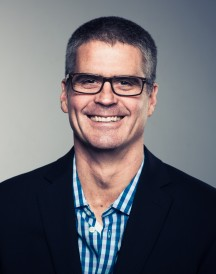
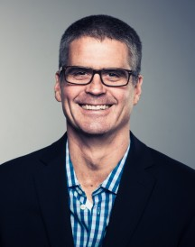
Need Bio here
Craig Rowley
Executive Director
 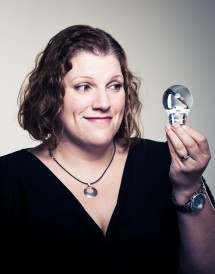
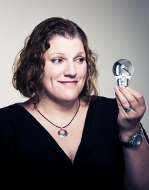
In the late 90s, when digital and Internet advertising was still finding its way, I was busy producing banners for Disney and JCrew and working on the Nike Goddess campaign. I even worked on a project to do green-screen body shape capture for JCrew's world's first "virtual dressing room". As digital grew, I took my talent for project analogies, masterful checklists, and technical know-how to produce brand-level websites and mobile ads for DS Waters, Wells Fargo and Lexus. I was the Director of Interactive Production at Tribal DDB LA. I have most recently been instrumental in integrating process and products as an Executive Director at Team One.
Elizabeth Brownsen
Executive Director
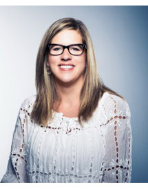
possible. I have led dozens of integrated marketing programs for modern brands, from launching the car-of-the-future with Stephen Spielberg to giving affluents permission to fly private jets again. Protecting pricing power and shifting marketshare for my clients drives me. Again, did I mention I’m competitive?
Prior to my position as Executive Director, I had the privilege of leading the Agency’s Experiential Marketing Department, responsible for designing and activating virtual and physical brand experiences, including partnerships between Lexus and NBC/Universal, Eric Clapton, Fox Studios, Coach, American Express Publishing, Sports Illustrated, Pebble Beach Concours d’ Elegance, Conde Nast Publishing, Hollywood Bowl, Lincoln Center, Rossignol, and a cache of premium hotel partners such as Sun Valley Lodge, The Boulders and The Amangani.
Before joining Team One, I was the Marketing Director at a premier Northwest Resort, Crystal Mountain, running all aspects of Marketing and Sales. Admittedly, I still miss the “research” part of that job, which involved spending more time on the slopes than in my office.
Julie Michael
Executive Director
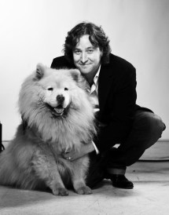
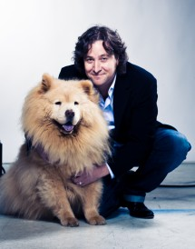
I’m responsible for uncovering insights—spotting meaning in signs and symbols—and helping to translate strategic ideas into something useful for product design, service approach and creative application. My strategy group and I are responsible for learning about people and facilitating more meaningful conversations between them and the brands we represent.
Throughout my career, I am proud to have worked with a diverse group of brands including Acura, Air New Zealand, American Express, Belkin, Bombardier, Boost Mobile, City of El Segundo, Flexjet, Honda, Icelandic Glacial Water, JW Marriott Hotels, Lexus, Lollia, Love & Toast, Nextel, Nintendo, Procter & Gamble, Tokyo Milk, Toyota, Renaissance Hotels, The Ritz-Carlton and VISA
Mark Miller
Chief Strategy Officer
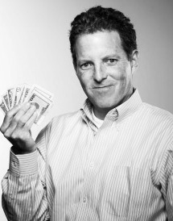
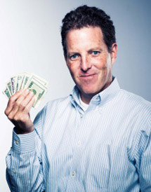
I head Team One’s Finance Department, overseeing a staff dedicated to coordinating with Agency and Client teams to ensure accurate, timely accounting of all jobs in progress. After several years in the New York office of Saatchi & Saatchi, I was promoted to succeed Saatchi LA’s longtime head of finance, Lew Katz, who announced his retirement in late 2008. Prior to joining Saatchi & Saatchi in New York, I worked in the Finance Group of Toys “R” Us, a leading retailer. I hail from Minnesota and New Jersey. I received my bachelor’s degree in finance from Providence College in Rhode Island and my M.B.A. from Iona College in New York.
Mark Miller
Chief Strategy Officer
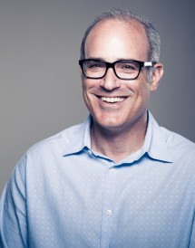
At Team One I oversee our Idea Communications practice, which includes the disciplines of media, public relations, and experiential marketing and strategic alliances.
60+ players strong, we are a collection of dynamic-thinking and innovative analysts, strategists and negotiators who are experts in communications and engagement planning, ideation, and activation. We work hand-in-hand with all agency departments, taking an integrated, channel-agnostic approach. Our vision is to transform the way ideas are delivered to optimize and enhance our client’s connections with its consumers.
Over my career I have worked across diverse categories with both established and challenger brands: Automotive/Motorsports (Lexus, Toyota, Nissan, Infiniti, Mitsubishi, Ford, Yamaha), Packaged Goods (Nestlé), Entertainment (Square Enix, MGM), Travel and Tourism (The Ritz Carlton, Hilton, Qantas, Air New Zealand, Crystal Cruises), Financial (Northern Trust, Sumitomo Bank, Merabank).
And I’ve also won a few awards over the years for the work I’ve done with these clients: Effies, Cannes Lions, Creative Media, and Festival of Media to name a few.
While I’ve been in this business a few years, what keeps me current and constantly evolving is my belief in the power of connection and influence, and the notion that attraction is about moving from irreplaceable to irresistible.